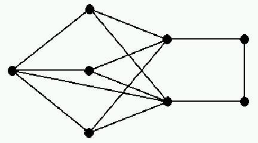

Pebbling MoveIf it is possible, one can move two pebbles from a given vertex to one of its neighbors. However, only one pebble reaches the neighbor since the other is paid as a toll along the edge.
before during after 

Connie & PeterPeter the Pebbler and Connie the Configurer play the following game on a graph $G$.Peter buys $t$ very expensive pebbles and gives them to Connie. Of course, Peter doesn't want to spend too much money if he can avoid it.
Connie distributes a configuration $C$ of pebbles onto the vertices of $G$ and chooses a root vertex $r$ Peter will win the game if he can place a pebble on $r$ after a sequence of pebbling moves; otherwise, Connie wins the game.
SolvabilityIn the case that Peter wins we say that $C$ is $r$-solvable (otherwise $r$-unsolvable). If $C$ is $r$-solvable for every $r$ then $C$ is called solvable.
solvable unsolvable 

Pebbling NumberThe pebbling number of $G$ is denoted $\pi(G)$ and equals the fewest number of pebbles Peter must buy in order to guarantee victory.That is, if Peter buys $\pi(G)$ pebbles then every possible configuration of Connie's is solvable, while if Peter buys $\pi(G)-1$ pebbles then Connie can find a configuration that is $r$-unsolvable for some $r$.
First FactsBreadth Lower Bound. $\pi(G) \geq N(G),$ where $N(G)$ denotes the number of vertices of $G$.Otherwise, Connie will place at most one pebble on every vertex except the root.Graphs whose pebbling number equals $N(G)$ are said to be of Class 0.
Cut Lower Bound. $\pi(G) > N(G)$, when $G$ contains a cut vertex $x$.Otherwise, let $A$ and $B$ be two components of $G-x$, with $v \in A$ and $r \in B$. Then Connie will place $3$ pebbles on v and $1$ pebble on every other vertex except $x$ and $r$.Thus Class 0 graphs are $2$-connected.
Depth Lower Bound. $\pi(G) \geq 2^{{\rm diam}(G)}$, where ${\rm diam}(G)$ denotes the diameter of $G$.Otherwise, Connie will place all the pebbles on a vertex at distance ${\rm diam}(G)$ from the root.Pigeonhole Upper Bound. $\pi(G) \leq (N(G)-1)(2^{{\rm diam}(G)}-1) + 1$.Otherwise, Connie cannot avoid placing at least $2^{{\rm diam}(G)}$ pebbles on some vertex, from which any root can be solved.
First ResultsCliques. $\pi(K_n)=n$, where $K_n$ denotes the complete graph on $n$ vertices.This follows from the breadth and pigeonhole facts above.Paths. $\pi(P_n)=2^{n-1}$, where $P_n$ denotes the path on $n$ vertices.This follows from the depth fact above and induction.Petersen. $\pi(P)=10$, where $P$ denotes the Petersen graph.Give it a try!
Real ResultsCyclesLet $C_n$ denote the cycle on $n$ vertices. Then Pachter, Snevily, and Voxman proved the following theorem in [PSV].For $k \geq 1, \pi(C_{2k})=2^k$ and $\pi(C_{2k+1})=2\lfloor{2^{k+1}/3}\rfloor+1.$
TreesFirst we define a maximum path partition $Q$ of a tree $T$. Consider a partition $Q=(Q_1,\ldots,Q_m)$ of the edges of $T$ into paths $Q_1,\ldots,Q_m$, written so that $q_i \geq q_{i+1}$ where $q_i=|Q_i|$. Any choice of root vertex $r \in T$ induces an orientation of the edges of $T$ and thus also on each path $Q_i$.The orientation on $Q_i$ determines a root $r_i$ of $Q_i$ which may or may not be an endpoint of $Q_i$. If $r_i$. is an endpoint of $Q_i$ then we say that $Q_i$ is well $r$-directed. We call $Q$ an $r$-path partition of $T$ if each path $Q_i$ is well $r$-directed, and a path partition if it is an $r$-path partition for some $r$.
The path partition $Q$ majorizes another, $Q'$, if its sequence of path lengths majorizes that of the other, that is, if $q_j > q_j'$, where $j=\min\{i : q_i \neq q_i'\}$. A path (resp. $r$-path) partition of $T$ is maximum (resp. $r$-maximum) if no other path (resp. $r$-path) partition majorizes it.
Let $(q_1, \ldots, q_m)$ be the nonincreasing sequence of path lengths of a maximum partition $Q=(Q_1,\ldots,Q_m)$ of a tree $T$. Then Chung proved the following theorem in [Chu].
For $Q$ as above, we have $\displaystyle{\pi(T)=\Big(\sum_{i=1}^m 2^{q_i}\Big) - m+1.}$
CubesLet $Q^d$ be the $d$-dimensional cube. Chung invented the $2$-Pebbling Property in order to prove the following theorem in [Chu].$\pi(Q^d)=2^d.$
Sharper Upper BoundsA set $S$ of vertices is a dominating set if every vertex not in $S$ is adjacent to some vertex in $S$. The domination number of a graph $G$ is denoted ${\rm dom}(G)$. Chan and Godbole [ChGo] made the following improvements on the Pigeonhole Upper Bound (here we write $d={\rm diam}(G)$.$1.$ $\pi(G) \leq (n-d)(2^d-1)+1.$
$2.$ $\pi(G) \leq \{n+\lfloor n-1/d \rfloor -1 \}2^{d-1}-n+2.$
$3.$ $\pi(G) \leq \{n+2{\rm dom}(G)\}2^{d-1}-{\rm dom}(G)+1.$
PracticeLemke GraphDefine the Lemke graph $L$ by the picture below. Prove that $\pi(L)=8$.Complete Bipartite Graphs
 Define the complete bipartite graph $K_{a,b}$, having vertices $\{u_1,\ldots,u_a\} \cup \{v_1,\ldots,v_b\}$ and edges $u_iv_j$ for every $i$ and $j$. For example, the star on $n$ vertices is $S_n=K_{1,n-1}$. Prove that $\pi(K_{2,b})=b+2$.BooksDefine the book $B_{p,q}=S_{p+1}\times P_q$ (see cartesian product), having $p$ pages, $q$ vertices per page, $q$ vertices on the binding. Prove that $\pi(B_{3,3})=18$.Subset LevelsFor $0 < k < d$, let $S_k(d)$ be the collection of all $k$-subsets of $\{1,2,\ldots,d\}$. $0 < i < j < d$, define the cube levels graph $Q^d_{i,j}$ to be the bipartite graph with vertex parts $S_i(d)$ and $S_j(d)$ having edges $EF$ when $E \subset F$. Prove that $\pi(Q^4_{1,2})=12$.
{kind=link}
{kind=link}